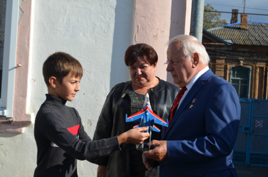
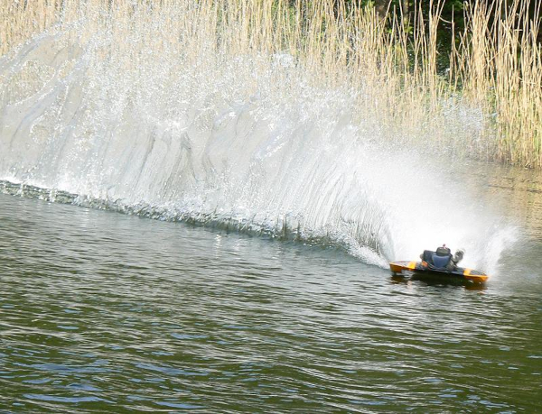
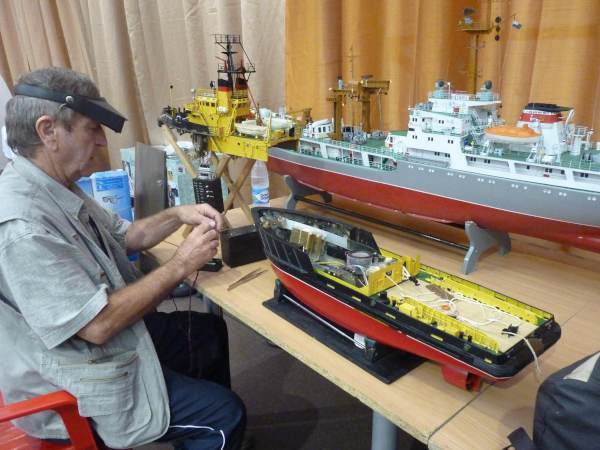
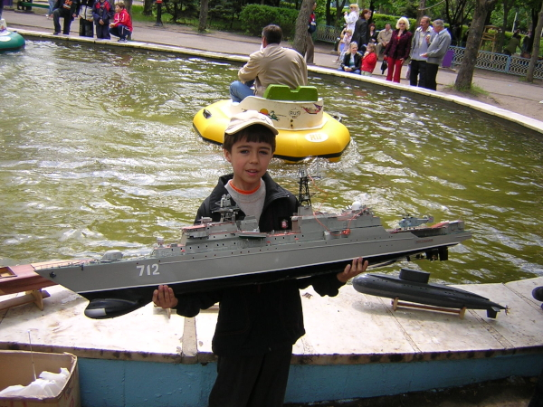
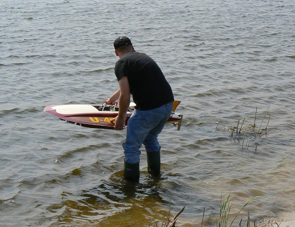
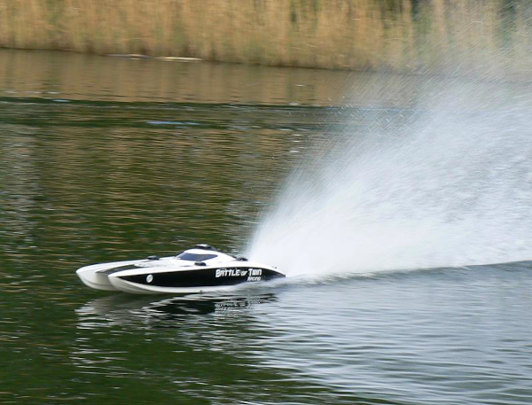

Краевой чемпионат по судомодельному спорту "CUP-2021"
Краевые соревнования по судомодельному спорту в классе гоночных моделей "mini","expert" .

Открытое первенство "Моделисты Ейска" 2023г.
Открытые соревнования по авиамодельному спорту среди школьников в классе кордовых моделей копий.

Всероссийский фестиваль "От винта" Москва 2023г.
Лауриаты всероссийского фестиваля "Отвинта" в номинации беспилотных аппаратов.
Краевые соревнования по гоночным судомоделям проходили в одном из живописнейших мест Краснодарского Края.
Ейская команда была представлени опытными спортсменами и молодыми юниорами, которые должны перенять опыт и мастерство страрших товарищей
Соревнования прошли на высоком профессиональном уровне. Судейскую бригаду возглавлял заслуженный судья высшей категории Старников Александр Фадеевич
В упорной спортивной борьбе команда Ейска заняла второе место. В личном первенстве хорошо выступили и заняли призовые места Наумкин Николай, Старовойтов Вячеслав
Победители и призеры были награждены медалями. грамотами и ценными призами
Открытое первенство "Моделисты Ейска" проводилось среди школьников младшего и среднего возрастав классе кордовых моделей копий. В этих соревнования приняли участие воспитанники
разных обьединенний технического творчества. На соревнованиях были представлены облегченные контурные модели копии знаменитых отечественных самолетов.
Ребята построили их своими руками и освоили их пилотирование. Лучшим пилотом стал воспитанник ЕСЮТ Наумкин Николай, тренер и наставник Бортников С.В.
Николай выступал с моделью копией "Як-18п" с двигателем 3,5 см3 Два других места заняли воспитаники авиамодельного клуба ДОСААФ г.Ейска Владимир Мирны
и Старовойтов Вячеслав , тренер и наставник заслуженный мастер спрорта Владивостоков А.О.
На Всероссийский фестиваль "От винта" проходивший Москве, в май 2022г после многочисленных региональных отборов
были приглашены учавствовать два наших воспитанныки Ейской СЮТ Старовойтов Максим и Геннадий Соловьев. На фестиваль они представили
свои работы : автономный ныряющий робот-помошник водолаза и летающий гибрид планера - коптера. Работы были достойно оценены и их юнные
конструкторы были в числе лакриатов. Они были удостоины почетными грамотами и путевками в ммммолодежный лагерь "Орленок"